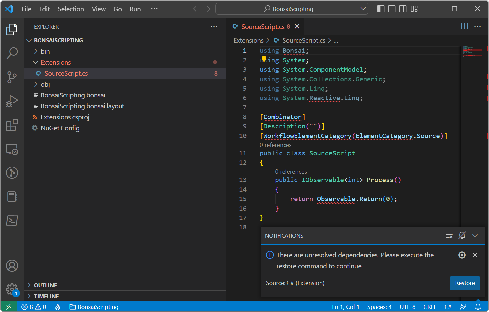

Scripting Extensions
Local extensions can be used to augment the functionality of workflows with new operators scripted directly using the C# programming language. This gives you the ability to tap into the entire .NET ecosystem without requiring a more formal C# project, as the Bonsai bootstrapper will automatically compile the scripts from source each time the workflow is loaded.
Scripting extensions are more commonly used to develop small project-specific functionality, but can also be easily shared with others by simply copying individual scripts.
Tip
If you are interested in developing extensions to be reused across several different projects, consider creating a package instead.
Pre-requisites
- .NET 6.0 SDK.
- Visual Studio Code.
- C# extension for Visual Studio Code.
- .NET Framework 4.7.2 Developer Pack.
Warning
You might need to reboot your machine after installing these components.
Creating a local extension
From the Bonsai editor, either open an existing workflow, or create and save a new workflow.
Add a new
CSharpSourceoperator from the Toolbox.Double-click on the scripting node. A dialog should be displayed asking whether you want to create the Extensions folder. Click
Yesto proceed and give a name to your new scripting operator. If the above pre-requisites have been installed, Visual Studio Code should then be launched automatically.After Visual Studio Code opens, a notification should appear on the lower-right corner with a warning about unresolved dependencies. Click the
Restorebutton to finish configuring the extensions project. You can now go ahead and modify your local extension script.
Note
If the notification disappears before you have a chance to click
Restore, you can bring back the notification by clicking the small blue bell icon on the lower-right corner of Visual Studio Code.Every Bonsai operator specifies an observable sequence using the IObservable<T> interface. The System.Reactive package provides a comprehensive library of methods used to generate and manipulate observable sequences in C#. The simplest way to implement new operators is by using the methods in the Observable class.
As an example, the expression below will generate a simple periodic sinewave by applying the projection operator Select to the incremental counter sequence generated by a Timer.
[Combinator] [Description("")] [WorkflowElementCategory(ElementCategory.Source)] public class SourceScript { public IObservable<double> Process() { return Observable .Timer( dueTime: TimeSpan.Zero, period: TimeSpan.FromSeconds(0.5)) .Select(counter => Math.Sin(counter)); } }After you are satisfied with your script extension, save the script file and switch back to the Bonsai editor. Save the workflow and select
Reload Extensionsfrom theToolsmenu. All scripts will now be compiled and loaded every time the workflow is opened.Warning
Any errors found while compiling the C# scripts will be logged to the black terminal window when the editor reloads. Make sure to check for any messages if you cannot use the scripting operators after reloading extensions. Be aware that scripting extensions in Bonsai currently use the built-in .NET Framework compiler which only allows for language features up to C# 5.
Adding dependencies to a local extension
If you need to access external libraries when writing your scripting extensions, you can add new PackageReference items in the Extensions.csproj file. For example, to add OpenCV.NET as a dependency to your project extensions:
<Project Sdk="Microsoft.NET.Sdk">
<PropertyGroup>
<TargetFramework>net472</TargetFramework>
</PropertyGroup>
<ItemGroup>
<PackageReference Include="Bonsai.Core" Version="2.7.1" />
<PackageReference Include="OpenCV.Net" Version="3.4.1" />
</ItemGroup>
</Project>
Warning
Make sure all package references are also installed in the Bonsai package manager. Otherwise, your scripting extensions may fail to compile successfully.
Debugging a local extension
It is possible to debug a local extension project. However, you will have to use the Visual Studio debugger, as it is currently not possible to debug Bonsai extensions using Visual Studio Code.
To enable debugging, select Reload Extensions with Debugging from the Tools menu. This will recompile the extensions project with debugging symbols enabled. From within Visual Studio, select the option Attach to Process from the Debug menu and find the Bonsai editor process from the list of active processes.
After attaching to the process, you should be able to open or drag into the editor any local script file and place breakpoints or inspect local variables, as if you were running a standard C# project.